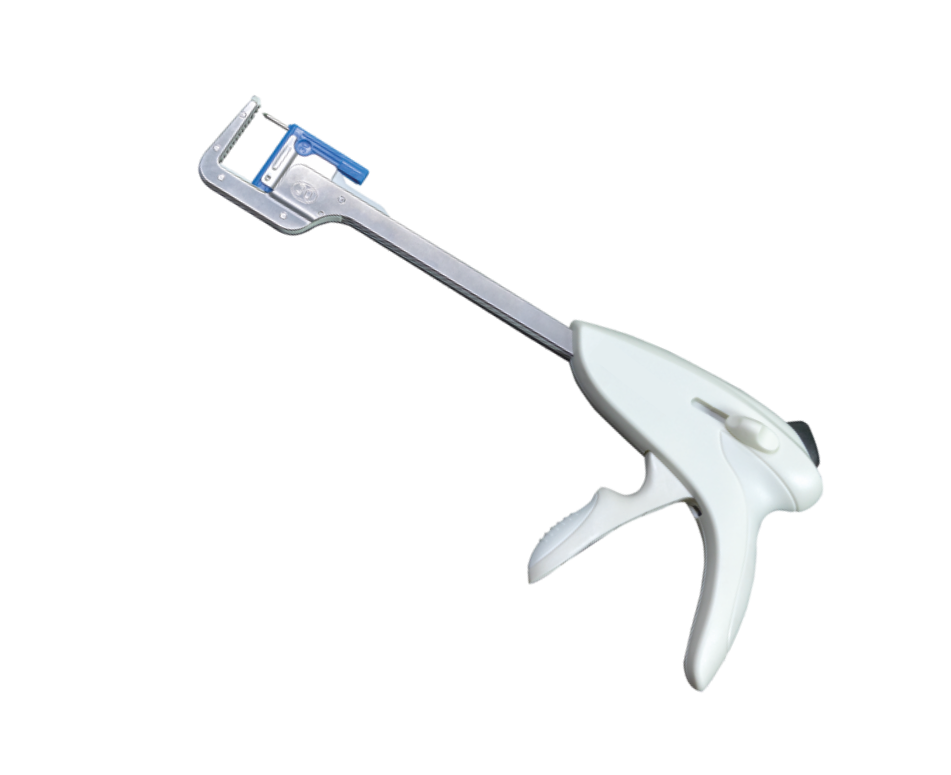

tissue for surgical access
Surgical technique using electrical current to cut or coagulate tissue.
Clip used in endoscopic surgery to secure tissues or structures.
Device used in endoscopic surgery to place staples.
Minimally invasive surgery performed using an endoscope.
Cells lining the blood vessels and lymphatic vessels.
Technique involving turning a structure inside out for surgical access.
Artery supplying blood to the lower limbs.
Clip used to hold tissues or structures in place.
Suture used to secure tissues or implants in place.
Broad category of surgery involving various body systems.
Surgical procedure to alter the stomach, often for weight loss.
Surgery related to female reproductive organs.
Control or stopping of bleeding during or after surgery.
Surgical repair of a hernia by suturing the defect.
Chemical process where materials break down in the presence of water.
Bleeding that occurs during surgery.
Ensuring that surgical knots remain secure to prevent suture failure.
Clip used in laparoscopic surgery for tissue management.
Stapler used in laparoscopic procedures for placing staples.
Minimally invasive surgical technique using a laparoscope.
The process of tying off a vessel or duct to prevent blood flow or drainage.
